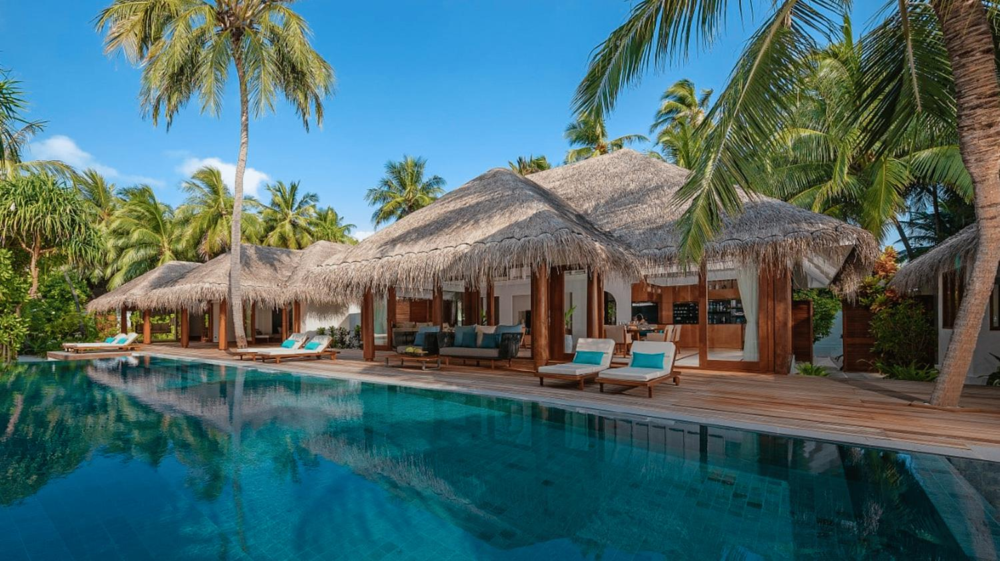
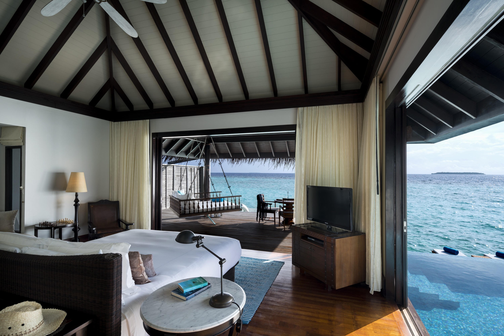

Виллы с бассейнами в биосферной зоне
Anantara Kihavah Maldives Villas расположен в Baa Atoll, биосферной зоне ЮНЕСКО, и хорошо подходит для гостей, которые хотят совместить пляж, дайвинг, просторные виллы и выразительную гастрономию.
Курорт делает акцент на приватных виллах с бассейнами, океанских активностях, семейном отдыхе и ярких ужинах, включая один из самых запоминающихся подводных ресторанных сценариев на Мальдивах.
- Адрес
Kihavah Huravalhi Island, Baa Atoll
- Телефон
по запросу
- Трансфер
гидросамолет от Velana
- Формат
пляжные и водные виллы с бассейнами


Гастрономия над водой и под водой
Рестораны отеля подходят для разных сценариев: от спокойных завтраков и пляжных обедов до ужинов с дегустацией и атмосферных вечеров у океана.
Океан, риф и активный день
Дайвинг, снорклинг, водные виды спорта, SPA, обсерватория, семейные программы и приватные ужины позволяют сделать отдых насыщенным без потери приватности.
Для гастрономии и океана
Отель подойдет парам, семьям и гостям, которым важны природное окружение Baa Atoll, виллы с бассейнами и сильные ресторанные впечатления.